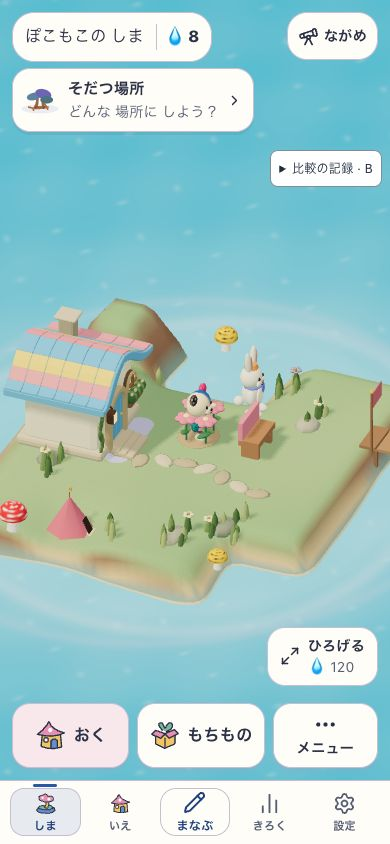
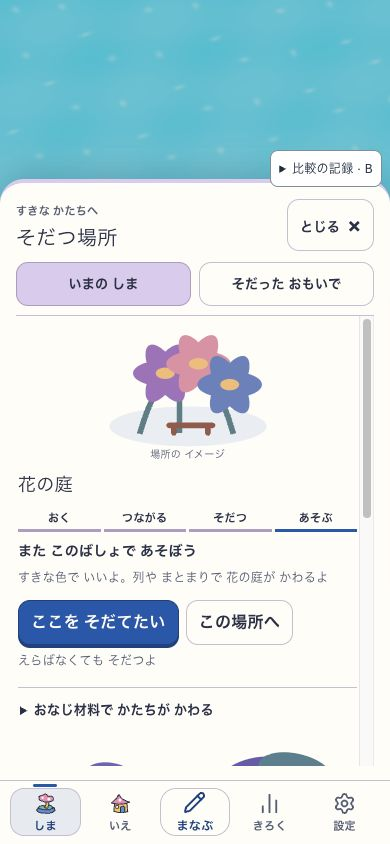
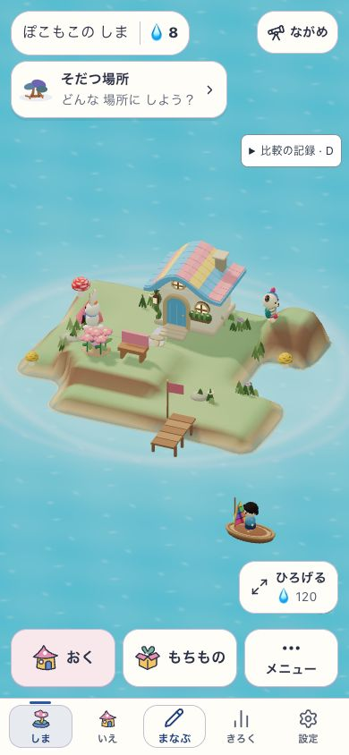

SANSU / 3時間検証の記録 / 2026-10-23
編集して、使えて、
続く島へ。
編集して住人が使える庭と湾は作れました。美しい島を自在に、滑らかに編集する目標には届いていません。
- 仕組み：通常の島で配置・利用・保存再開を確認。96区画の湾は保存しない診断です。
- 美術：大きな側壁と穴が残り、参考の自然な場所の構成に未達です。
- 操作：処理の重複を減らしましたが、最終試験版でも初回編集時に約0.4秒の画面更新の空きが残りました。
性能短縮の大半は、比較実装が試験設定を大量に読み直す負担を、起動時の一度へ移した効果です。製品そのものを1.7→0.4秒へ改善した報告ではありません。今回はローカル試験のみで、src/・public/は変更していません。
次の一手：上面の輪郭と入口を持つ「場所」を、一つの編集単位にする仮説。同じ所有物で高い庭と低い入り江を作り分けられるかを試します。未実装の提案と判定条件
試作を触る（保存されません） v17・96区画の診断用の島。再読込で初期状態に戻ります。
最終目標は、子どもがゲームの中で島を自由に変え、美しい景色と住人の暮らしが一緒に育ち、翌日も続けたくなること。小島での比較は、その仕組みを確かめるための実験です。
小物の数を増やさず、地形の作り方を比べる
同じ取得土地・所有物・成熟を保ち、地形の生成方法を変更しています。岸の形、使える上面、低地とのつながりを見ます。画像を押すと拡大できます。
庭と湾は作れた。美術と操作性能は未達。
通常の30区画では、Hの高庭を再開後に2人が利用。保存しない96区画の診断では、既存の花とベンチを置き、16回の高さ変更で海へつながる幅のある湾を作りました。ただし大きな側壁と穴が残り、上の庭・登り口・低い水際が一つの自然な景色には届いていません。最終の湾を持つfixtureの新規起動でも、2人が庭とベンチを使う新しい4件を確認しました。これは通常DBからの保存再開とは別です。
候補ごとに、採否を分ける
| 候補 | 変えたこと | 現時点の判断 |
|---|---|---|
| A | 既存の連続地表。比較の基準。 | 動作比較の基準として維持。平たい台と単独の丘という構成は、美術の目標に未達。 |
| B | 高さの間を、肩・斜面・裾の断面でつなぐ。 | 丘の裾は局所的に改善。島全体の構成差は小さく、採用は保留。 |
| C1 | 連続した海岸帯を作り、入り江と岸を整える初版。 | 棄却 上げる操作で地面が下がる反例を確認。見た目にも薄く尖った岸が生じた。 |
| C2 | 高さ編集の意図を保つため、C1の岸処理を修正。 | 正の高さ編集の逆転を解消。固定視点でも、薄い尖りと直線的な台が残る。美術は保留。 |
| D2 | 物を置ける上面と、そこへ登れる裾を持つ段丘。 | 採用不可 上面は明確になったが美術未達。群の接続で最大約1.424mの形状変位が生じる反例がある。 |
| F2 | 入力した高さを守り、群接続による急な形の切替を除いた段丘。 | 限定ケースで通常編集・配置・2人の利用・保存再開を確認。上面のある庭は前進だが、直線・角張りが残り、美術は保留。 |
| G2 | 取得土地から基面と海岸を作り直す。 | 外周は柔らかくなったが、配置可能面が減少。海上に残るように見える装飾もあり、採用保留。 |
| H | 土地・所有物・高さから独立した、可逆な曲がった格子とF2。 | 高庭の通常編集・Undo/Redo・配置・再読込と、新しい利用4件を確認。テントの埋まりは通常操作53で修正。大きな前壁が残り、美術・全接地は未受入。 |
| H＋linear／stable | 内側を連続した斜面にし、基面を取得状態から独立させる試験。 | 96区画で配置・Undo/Redo・湾の開口を通常UIで確認。診断では庭から低地への支持と海との接続が成立。大きな台と穴は残り美術未達。最終地形のfixture新規起動で2人×庭/ベンチの新しい4件も確認。保存しないfixtureで、保存合格ではない。 |
| 一度compile | 同じ地形の検証と索引を再利用し、二度の構築を一度にまとめる。 | 実UIの長い処理は1841→1687ms（各1回）。形状を保つ性能改善候補だが、操作時の停止は解消していない。 |
| 方式設定の固定 | 頂点ごとに繰り返していた試験設定の読み取りを、起動時の1回へまとめる。 | 同じv15・同じ地形編集の比較で、world生成1600→433ms、最大rAF間隔1667→500ms。各1回の限定比較。約0.5秒の停止は残る。 |
| 地表計算の再利用 | 同じ地形の構築中に、同じ地点の床計算を再利用する。 | 同じv16のOFF→ON比較値はworld生成428→371ms、最大rAF間隔500→435ms。各1回・ON→OFFの固定測定順。一般的な改善率は未確認。 |
| 経路検査の再利用 | 同じ構築内の同じ床・方向の検査結果を再利用する。 | 同じv17のOFF→ON比較値はworld生成355→345ms、最大rAF間隔433→401ms。各1回の小差で優位性を断定しない。滑らかな編集は未達。 |
| 粗い地表 | 線形斜面の分割を12→6へ減らす。 | 今回棄却 計算は軽くなるが、床に最大5.83cmの差と水域の変化が生じた。同じ島の軽量化としては扱わない。 |
C1は「上げる → 下がる」で棄却
座標 (0, 1) を2段目へ上げる診断で、中心の実床が 0.180 → −0.031 へ下がりました。基準Aなら0.360になる入力です。地形の仕上げが操作の意図を壊すため、係数調整による見た目の改善として扱いません。
根拠：C1の高さ応答の診断。初期所有物を保持した通常ドメインcommandによる検査で、人物がいない診断fixtureです。通常UIの全操作や実機の描画速度を検証した結果ではありません。
C2には外縁の8サンプルで最大約4.13cmの逆方向変位が残ります。すべて取得footprintの外側で、従来も物を支持しない場所です。正の高さ編集の逆転を解消したことと、この外縁の残差は区別します。C2の局所性診断
D2：限定ケースは正常。自由編集は反例で不合格。
2段の支持・利用はドメイン診断で通過し、通常UIからの配置と新しい場所での住人利用も確認。一方、単独の編集領域が2セルの群へつながる境界で最大約1.424m、橋渡しして群を結ぶケースで約1.216mの形状変位が出ました。群の合体を契機に生成形状全体が切り替わるため、この版の正式採用はできません。
根拠：D2の診断結果・入力hash。小ケースの成功は、任意の編集操作や美術の合格を保証しません。
動作は確認した範囲まで。美術とは別判定。
390×844のローカル実アプリで、既存の花とベンチを通常UIから移動しました。取得土地・所有物・成熟・通貨を保ったまま、配置と場所のrevisionが変わることを確認しています。
- 移動後の場所を、2人の住人が実際に利用した記録がある。
- 再読み込み後も、配置と利用履歴全体が保持された。
- 地形Undoは地形だけを戻し、Redoで同じ地形へ戻った。
根拠：通常UIの検査記録（2026-10-23 05:20 JST）。この確認を、C2/Dの美術・全条件での利用・全保存経路の合格へ引き継ぎません。




D2の小さな段丘でも、通常操作から場所を作れた


通常の持ち物から、花を (1,3)、ベンチを (2,3) へ配置できました。その後、2人の住人に新しいplace revisionでgardenの利用記録が発生しました。DBへの注入は行っていません。
再読み込み後も家具と地形は完全一致し、再開前の利用履歴24件をすべて保持。25件目には、ぽこもこによるベンチの自然な利用が追加されました。履歴件数が増えたことを保存不一致とは判定しません。
上面に物が載ることで、低い庭とは異なる場所が現れました。ただし直線的な前壁と角張った端は残ります。使えることの前進と、美術の未達を両方記録します。
家具を置いた後のUndoには制約がある
家具の支持を崩す地形Undoは「ものの足もとだよ。さきにうごかしてみよう」と拒否され、状態は変わりませんでした。これは支持を守る動作であり、好きな順番で自由にUndoできる証明ではありません。

H：高庭を使った「今の利用」を、過去の履歴と分けて確認
通常の島で高庭を作り、Undo/Redoを経て花とベンチを再配置。その後、v8 buildで通常のDBから再読み込みました。49と50の地形・土地・家・花・ベンチ・記念品は完全一致しています。再開後は誘導や地形編集をせず、06:19:10〜06:19:43 JSTに、ぽこもこと住人v2がそれぞれベンチと庭を利用する4件の新しい描画後の観測を得ました。
この観測は、正常に描画され、カメラ内にいる住人の利用を、通常のUIが受理した直後に記録します。再送は除外し、日時・対象・住人・実world revisionを付けています。同じ場所の利用履歴は保存側で重複排除されるため、古い履歴の再表示や保存件数の増分を新しい利用証拠には使いません。
根拠：編集後 · Undo後 · Redo後 · 配置後 · 通常DBからの再開後 · 4件のlive利用観測 · 観測位置と限界。編集後46とRedo後48のterrain全体は一致。静止画49は配置直後で、4件の利用中の写真ではありません。
テントの埋まりは修正。全モデルの接地合格とは分ける。
旧高庭の診断では、p1テントの底付近に最大約5.63cmの埋まりがありました。これは高庭を作る前の入力にも存在した問題です。通常操作53で (0,1) を−1→0に戻し、同じ修正のモデル頂点診断ではこの埋まりが解消しました。96区画の診断後に通常の島へ戻った76でも、修正後53と地形・土地・所有物・成熟が一致しています。
一方、後の96区画・湾の診断には花の土の底付近で約6mmの埋まりが残ります。テントの修正や住人利用だけで全接地を合格にしません。利用は限定成立、美術は未達、全接地は未受入です。
旧状態・修正の頂点診断 · 通常操作53の修正後 · 通常の島76への復帰照合 · 湾の花に残る差。CPUの頂点サンプル診断であり、連続衝突・実機・全編集の保証ではありません。
モデルの同一性も分けて確認しています。テント・花・ベンチ・住人は実アプリと同じ生成器です。一方、接地診断内の nativeCottage はnative-05候補の小屋で、現画面の固定小屋とは別モデルです。その数値を実画面の小屋の接地証明には使いません。
96区画の診断：通常操作で、庭から海へ開く湾を作る
同じ実アプリ内で、花を (2,5)、ベンチを (1,6) へ移動。地形の下降・Undo・Redoを試し、元の高さと下降後の高さへ戻ることを確認しました。その後、細い溝を掘り、幅を広げ、庭側の上面を整える16回の高さ変更で最終69の地形へ進みました。家・花・ベンチの所有と配置は60→69で不変です。
最終の高さは独立したドメイン診断の入力と一致し、その診断では庭から低地へ続く3区間の支持と、湾の海への接続が成立しました。実UIでも同じ形を作れたことは前進です。一方、診断での住人利用は、最終69の実画面で新たに自然利用した証拠とは区別します。69の既存live logには以前の地形の利用が含まれるため、最終地形の利用証明へ流用しません。
その後、最終の湾と同じ地形で新しい自然利用を確認しました。 v13のshore fixtureを新規起動し、06:55:59〜06:56:16 JSTに、ぽこもこ・住人v2がそれぞれ庭とベンチを使う4件を観測。4件の実world revision内の高さは、最終69とすべて一致し、描画成功・カメラ内・visible・通常handler受理も確認しました。新しい利用4件の原記録。診断fixtureの新規起動であり、通常DBの保存再開の合格ではありません。
根拠：配置60 · Undo62 · Redo63 · 最終69 · 状態照合・hash · 支持・海との接続・利用のドメイン診断。16回は最終形に必要な受理された高さ変更の数で、地点選択や拒否された操作、Undo/Redoを含む総クリック数ではありません。
診断後は通常の保存島へ戻り、さらに最終v17の83でも通常保存を再読み込みました。53・76・83で土地・地形の全Undo/Redo・家・花・ベンチ・住人・character・しずく8・town・導出された場所が一致し、96区画や診断通貨に置き換わっていません。利用履歴33件も配列全体が一致し、代表利用の時刻と対象だけが変化しています。この差を新しい可視の利用証拠にはしません。既存の通常保存を読み直した確認であり、v17で新しく書き込んで再読込する往復は未実施です。 最終の復帰照合 · 81〜83の監査追記。offline・版更新・すべての保存経路の合格ではありません。
96区画は追加地形と診断用通貨を含むmemory-only fixtureです。DBに保存しません。旧画像69の「じめんを ほぞんしたよ」はfixtureに不適切な既存文言であり、DB保存の証拠にはしません。後続の試験版では診断中と分かる文言へ修正しています。
最終v17：二段の下降とUndo/Redoで、高さと場所を復元
通常UIで (4,4) を0→−1→−2へ下げ、Undo→Redo→Undo→Undoを実行。高さと導出された場所が元へ戻り、土地と所有物は不変でした。ただし履歴は64件の上限で古い2件が押し出され、最終はUndo62件・Redo2件です。高さの復元を、履歴全体の完全復元とは扱いません。 2回の新しい地形構築は339.2／347.6ms、対応する長い描画間隔は399.1／416.7msでした。
v17操作・状態・CPUの照合 · 復元後の最終実画面82。81/82の利用観測は編集前の2件で、この復元後の新しい可視利用を証明しません。ゲーム側の受理は別targetの2件が増えていましたが、画面の記録との差の原因は未確定です。この操作は保存しない96区画の診断で、通常保存の再読み込み83とは別です。

最終v17の新規起動85では、2人×庭/ベンチの4組を確認。 07:33:31〜07:34:06 JSTに、同じ地形で新しい描画後の利用が4件成立しました。目的地指定や地形操作は行っていません。これは新規起動時の成立であり、前のUndo後の連続利用とは別の証拠です。記録の食い違いと生活継続の監査 · 独立照合 · 最終版の実画面

続く同じsessionの一段編集・Undo後には、3静止画で2体の位置変化も確認しました。家前・花前・水際へ動く様子は見えますが、フレーム間の歩行安全や新しい利用完了の証明とは分けます。3画面と独立目視の記録
最終試験版も約0.4秒の空き。滑らかな編集は未達。
初回編集の約1.7秒の停止を、関数別の計測で追いました。試験設定を頂点ごとに読み直す負担と、同じ床の計算・検査の重複を減らしました。最終v17でもworld生成344.9ms、うちcompile277.8ms、最大rAF間隔400.7msです。描画間隔の中央値が約16.7msでも、操作時の長い停止を合格にはしません。
| 同じ版での比較 | world生成 OFF→ON | 最大rAF間隔 OFF→ON |
|---|---|---|
| v15 設定の固定 | 1600.1→432.6ms | 1666.7→500.4ms |
| v16 地表計算の再利用 | 427.7→370.6ms | 500.0→435.1ms |
| v17 経路検査の再利用 | 355.3→344.9ms | 433.4→400.7ms |
各組は同じ版で同じ地点 (4,4) を0→−1へ下げた、各1回の初回編集です。測定順はON→OFFで固定。地形・Undo/Redo・所有物は一致しますが、自然利用の時刻・対象・履歴は異なり、住人位置・GCなども統制していません。特にv17の小差を一般的な改善率とは扱いません。v17のカメラとworldのDOMは候補IDを除いて一致しましたが、ブラウザーの実メッシュやGPU性能の同値証明ではありません。
v15対照 · v16対照 · v17対照 · Nodeでのworld同値診断 · 停止原因を追った経過。96区画のmemory-only診断で、実機全体・公開版・美術の合格ではありません。
まだ証明していないこと：任意の高台への配置と到達、すべての保存経路、offline・版更新、子どもの無説明理解・愛着・再訪、公開版の美術合格。配置が合法でも、住人が到達できるとは限りません。
採用参考から移すのは、場所を作る大きな形

初期30セルと成熟した参考の地区数・密度は直接比較できません。ただし、岸の厚み、使える上面、登り口、余白と接地は小島でも必要です。同じ所有物のまま96区画へ広げた診断でも、今回の入力は広い台と段差に留まりました。広さを与えるだけで届く、という根拠は得られていません。診断の入力案 · 届かない理由と次の最小実証
96区画は、保存しない診断用の島
v10の比較fixture v2は、49の所有ID・配置・成熟を引き継ぎ、通常の拡張commandを3回実行した96区画（x=-3..8、z=0..7）です。追加地形と診断用の通貨も与えているため、面積だけを変えた因果比較ではありません。画面内の通貨は本人の残高ではなく、操作はDBへ保存していません。通常取得・学習経済・保存再開の合格にも使いません。
全景のため家が小さく表示されることと、地形が良くなることを分けて見ます。A/F/H間は同じ画角ですが、初期30区画の画像と同じ家の見かけの大きさではありません。
作れる形と、子どもが作れる操作は別
F2では実際の島に合う追加手順を見つけ、通常UIで実行できました。2点を各2段上げた入力から、5地点に対して計6回上げる操作を追加。地点選択を合わせて追加11操作です。花を (2,3)、ベンチを (2,4) へ配置でき、家具を置く前のUndo/Redoは地形を復元しました。
当初の診断fixtureは上げ10回・地点選択8回の18操作でしたが、これは最小手順ではありませんでした。今回の6回は既存の2段入力からの追加であり、初期状態からの全工程ではありません。道具を開く、収納・配置、画角調整もこの数には含みません。
現UIは選んだ地点の輪と「上げる／下げる」を示しますが、必要な斜面の範囲や高さの関係は示しません。command列を実行できることは、子どもが自分でこの形へ到達できる証拠になりません。ここは本人による理解の確認ではなく、コードと操作構造からの設計推定です。
次の仮説：上面の輪郭と入口を持つ「場所」の編集
使いたい範囲を短くなぞると、上面と近くの低地へつながる幅のある坂を自動で予告し、一回で戻せる編集を次の仮説にします。高さや入口の向きは必要なときだけ変えます。これは任意の遊びであり、初期の島は彫刻をしなくても美しく使える必要があります。
同じ家・花・ベンチで「海へ張り出す高い庭」と「海を囲む低い庭」を、同じ生成器と普通の移動操作で作り分けます。両方とも台と穴に見えたら美術不合格。入口横を狭める・Undo・新しい住人利用・再読込までが次の反証です。新方式はまだ未実装で、製品の保存形式も変更していません。具体的な入力と二場面の判定条件
F2のこのケースは、実UIで2人の住人が新しい場所を自然に利用し、再読み込み後も家具・地形・既存の利用履歴29件を保持しました。編集・配置・利用・保存再開の限定合格です。成功したUndo/Redoは家具を置く前で、任意の編集や美術・子どもの理解の合格ではありません。
また、同じ最終入力ではAの住人利用も成立する診断があります。利用成功だけからFの必要性・優越性は導けません。Aでは花の支持判定が不成立となる別の差があり、住人の到達と物の支持を分けて比較します。
手順の根拠：F2のドメイン診断 · 実UIの照合結果・hash · 実UIの編集後・Undo後・Redo後・配置後・利用後・再開後。編集後とRedo後のterrain全体は一致。
既存benchmarkとの照合：Little Habitatsの実操作では隣を同じ高さへ盛ると接続した上面になり、Townscaperの実操作では追加・削除に応じて縁・柵・屋根が組み替わりました。「単純な入力から接続造形が生まれる」点を参考にします。これらで住人の支持・登坂・子どもの理解まで確認したわけではなく、上記の場所編集はSansu向けの未実装の仮説です。
記録と、次の判定条件
凍結した試験版と範囲
place-method-comparison-v17 ／ delivery: snap-root-v1
ローカル試験buildと、実際の変換後コードの型検査はPASS。候補の追加はここで凍結しました。通常30区画の保存再開と、保存しない96区画の診断は別々の証拠です。製品採用・公開・配布の合格にはしていません。
入力SHA-256：8d381b47dd3d8b8aba720104d66962c32b8cf3ae320c0594970222f345fcbc8d
build・入力hash一覧 · 変換後コードの型検査 · 現在のruntime・出力との一致
最終候補ID
place-method-H:cardinal-convex-terrace-v2+fixed-two-shear-grid-v1+fixed-core-base-v1+fixed-bilinear-interior-ramp-v1+single-compile-v1+frozen-query-v1+memo-samples-v1+memo-edge-check-v1同じ入力でも、方式の変更で描画・足場・経路が食い違わないこと。入力順、Undo/Redo、保存再開を経ても同じ形になること。そして未調整の配置でも美しいこと。この三つを別々に確認します。
次に効く構造：群接続で形が飛ぶ規則は除きましたが、それだけで景色は成立しませんでした。次の証明は、輪郭と入口を持つ一つの地形パッチから、同じ所有物で「高く見渡す庭」と「低く水を囲む庭」を作り分け、隣を編集しても形と支持を保つこと。見た目がまだ大きな台と穴なら、美術は合格にしません。操作停止は、地形生成・検証・画面更新のどこで時間がかかるかを分けて改善します。
チャッピーへは、文章による一般的な技術検討を依頼しました。特定のゲーム実装・実画像・実機の独立監査ではありません。回答を採用の証明にはせず、反証すべき入力の選定に利用しています。実際の相談会話
最終候補のbuild・実変換後型検査・対象検査と文書検査は通過。標準ポータルの総合検査はプロセスの強制終了で未完です。検証一覧と未確認範囲